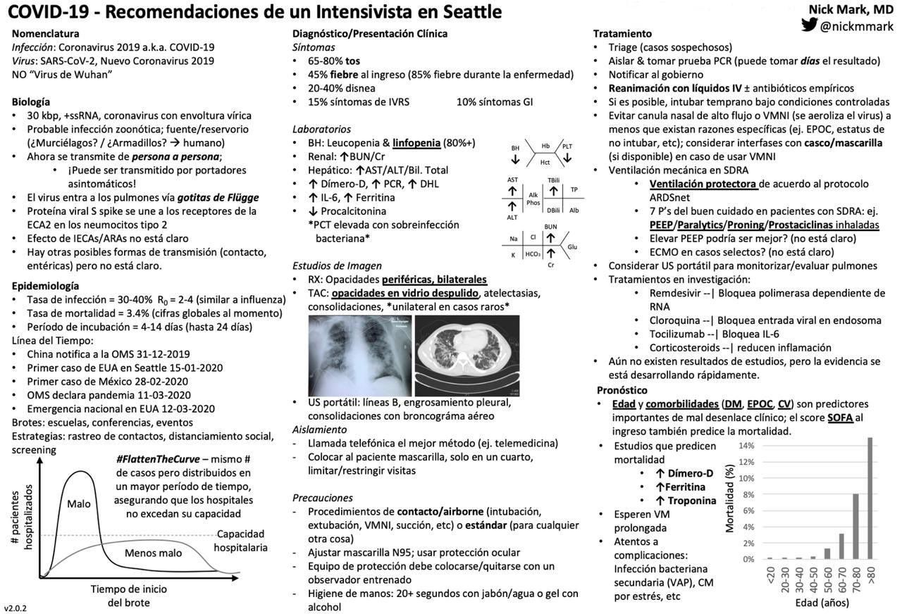
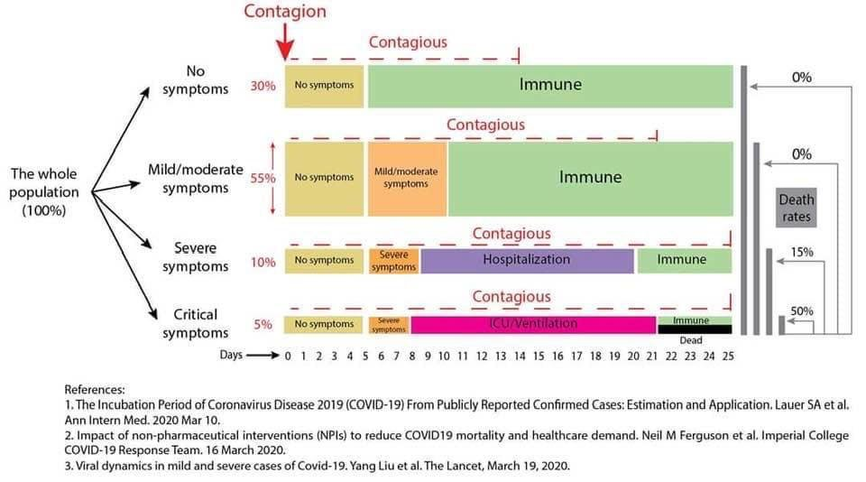

Covid19 - OnePage Texto

Incubación - Contagio - Clínica - Evolución - Inmunización

- 4 grupos de personas son identificables en relación a la respuesta que tiene cada grupo ante la infección viral.
- Los primeros dos son, afortunadamente, la mayoría (85% del total).
- El primer grupo (30% de los infectados), no desarrollan síntomas y a los 5 días ya desarrollan inmunidad. Pero por 14 días siguen con nivel viral suficiente para contagiar a otros.
- El segundo grupo, es el más populoso (55% del total), luego del período asintomático de 5 días, pasa otros 5 días con síntomas leves a moderados, luego queda inmunizado. También puede contagiar por 14 días desde que se
contagió el virus.
- El tercer grupo (10%) desarrolla la enfermedad con internación hospitalaria. Luego de la etapa asintomática, tiene síntomas severos que a los pocos días lo derivan en internación.
Aproximadamente a los 20 días logra inmunidad pero continua con potencial de contagio por 7 días.
- Por último, el grupo de los que morirán son aproximadamente el 5%. Luego de la fase asintomática de los primeros
días, los síntomas severos los obligan a internación en unidades de terapia intensiva con asistencia respiratoria.
A los 21 días pueden resolver su enfermedad o fallecer. Siguen contagiando por unos días más, ya sean vivos o cadáveres.
el % de mortalidad del #COVID19 representa el 15 % del grupo 3 y el 50 % del grupo 4.
Recordemos lo importante:
Estos % pueden subir si el sistema de salud se colapsa y no puede atender los casos graves y críticos